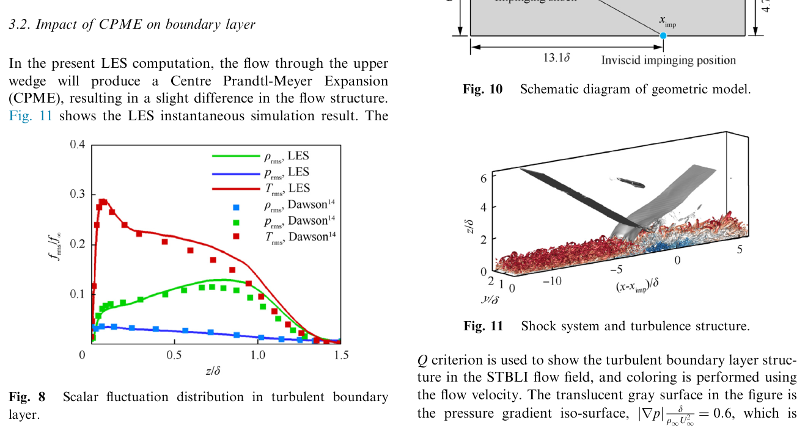
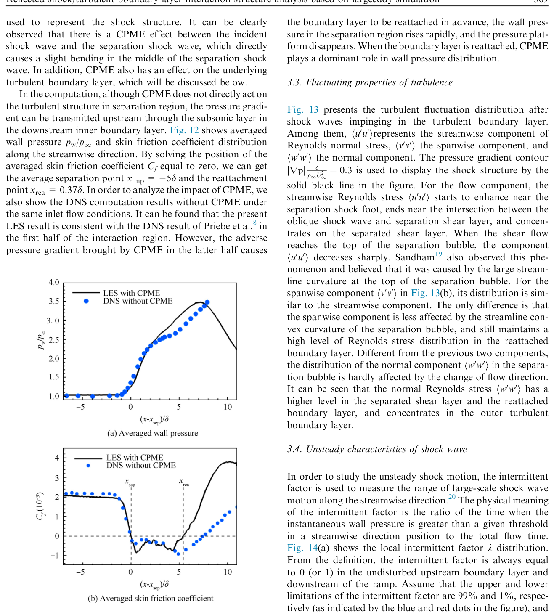
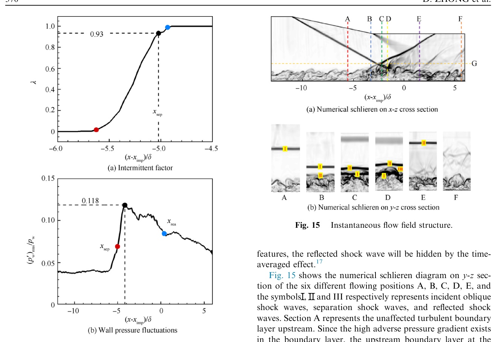
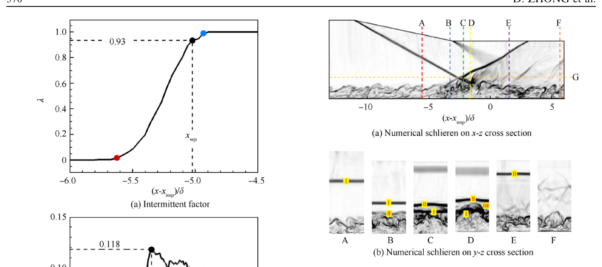

01中文摘要
为理解反射激波/湍流边界层干扰，采用大涡模拟研究来流马赫2.9、12°压缩拐角的激波与湍流边界层干扰。以回收/重标（rescaling/recycling）方法生成入口湍流，并在超声速平板湍流边界层上验证；从平板计算域回收面提取流场作为LES入口条件。重点分析反射激波/湍流边界层干扰区的精细结构和瞬态流场，发现激波非定常运动导致壁面压力脉动增大。
原始摘要（英文/原文）
In order to understand the physical phenomenon of the reflected shock/turbulent boundary layer interaction, the Large Eddy Simulation (LES) is conducted to investigate shock wave and turbulent boundary layer interaction in a 12 compression ramp with inlet high Mach number of 2.9. Rescaling/recycling method is used as inflow turbulence generation technique and validated on a supersonic flat plate turbulent boundary layer. The flow field of recycling plane in the plate computation domain is obtained to give the inlet boundary condition for the LES computation. This paper focuses on the reflected shock/turbulent boundary layer interaction region, where the fine flow structure and instantaneous flow field are analyzed in detail. It is found that the unsteady motion of the shock wave leads to the increase of wall pressure fluctuation.
02阅读说明
数值模拟（LES）研究。材料为9页期刊全文（Chinese Journal of Aeronautics, 2021, 34(5):364–372），bundle 共573行已全部读完；图件清单16项（含Table 2），正文图17幅，图注基本可读；另用PDF第6页核对分离/再附坐标。信息完整度较高：来流、网格、数值格式、验证量与主要统计量齐全；但未给网格无关性、压力谱、统计采样时长与实验不确定度。 文章类型：期刊
03一句话核心与三句话摘要
M2.9反射激波/湍流边界层LES揭示上壁膨胀扇改变分离泡、激波非定常运动使壁压脉动增1.95倍。
- 问题与缺口：STBLI的低频非定常机理仍不清楚，反射激波构型下细观涡结构、瞬时激波系与壁压脉动之间的联系缺乏系统的LES分析。 AI概括
- 方法与工况：用回收/重标定入口LES模拟M∞=2.9、Reθ≈2400的平板湍流边界层，再以12°楔产生入射激波，相互作用区网格529×89×133。 原文明确
- 主要发现：上壁膨胀扇（CPME）削弱逆压梯度、使分离泡缩小并消除压力平台；分离点−5δ、再附点0.37δ，间歇区0.7δ，壁压脉动最大增至1.95倍。 原文明确
04核心内容清单
| 要点 | 类型 | 重要性 | 原文依据 | 属性 |
|---|---|---|---|---|
| RRM可在较小计算代价下生成充分发展的M2.9超声速湍流边界层，平均速度、标量剖面和雷诺应力与实验/DNS总体一致。 | 方法验证 | A | p2–5，表2，图5–9 | 原文明确 |
| RRM存在平均剖面漂移：入口δ由6.7 mm变为计算6.32 mm，表2给出Reθ=2545，与正文所称2400不一致。 | 方法局限 | B | p2–3，表2 | 原文明确 |
| Reθ≈2400时准序涡以细长、非对称发卡涡为主，集中于湍流边界层外层。 | 湍流结构 | B | p3，图2 | 原文明确 |
| 上壁12°楔产生的CPME使分离激波中部弯曲，并削弱底层逆压梯度，导致分离泡缩小、压力平台消失、再附提前。 | 机制 | A | p5–6，图11–12，结论(2) | 原文明确 |
| 平均分离点x_sep=−5δ、再附点x_rea=0.37δ（均以入射点x_imp为原点）。 | 定量结果 | A | p6，图12 | 原文明确 |
| 分离激波间歇区长度Li=0.7δ；平均分离点处间歇因子λ=0.93，高于实验0.84。 | 非定常统计 | A | p6–7，图14(a) | 原文明确 |
| 壁压脉动沿流向为单峰结构，峰值位于分离泡内，区别于压缩拐角的双峰；最大脉动增至入口湍流边界层的1.95倍。 | 非定常统计 | A | p7，图14(b) | 原文明确 |
| 雷诺正应力主要沿分离剪切层分布；⟨u′u′⟩在泡顶因大流线曲率骤降，⟨v′v′⟩受影响较小，⟨w′w′⟩在剪切层与再附边界层较高并集中于外层。 | 湍流统计 | A | p6–8，图13 | 原文明确 |
| 瞬时分离激波脚分为三道弱压缩波；入射激波与剪切层相交后可反射为弓形激波，随后出现膨胀扇 ejection，且沿展向弯曲。 | 瞬时结构 | A | p7–8，图15–17 | 原文明确 |
| 再附区流线曲率可能产生Görtler-like涡对，作者引用近期实验与数值结果佐证。 | 机制推断 | B | p7，图15 | 原文明确 |
| 时均场会隐藏反射激波，因此仅用平均纹影/平均压力难以识别该瞬时结构。 | 方法论 | B | p7 | 原文明确 |
| 壁压脉动大幅升高可导致装置严重机械振动，是工程关注点。 | 工程意义 | B | p8，结论(4) | 原文明确 |
05引言：研究问题与领域缺口
【原文明确】STBLI是超声速流动长期未解的重要问题，低频非定常性仍难合理解释；Lee与Wang认为带分离STBLI的激波振荡是固有性质，Dupont等PIV发现剪切层大尺度对流结构，Bookey等给出M2.9、Reθ=2400的12°入射激波实验，Jammalamadaka等DNS指出相互作用区湍动能生成项增强。【AI概括】缺口在于：反射激波/湍流边界层（RSTBLI）的准序涡结构、瞬时激波系与壁压脉动之间缺少同时覆盖入口验证与相互作用区的LES；高马赫入口湍流生成也是LES/DNS的核心难题。【原文明确】目标是用回收/重标定方法（RRM）生成入口湍流，先验证超声速平板边界层，再分析RSTBLI结构与瞬时流场。适用边界为M∞=2.9、Reθ≈2400、12°楔、等温壁307 K。
06流动条件与几何构型
| 项目 | 数值/描述 | 依据 | 备注 |
|---|---|---|---|
| 工况A：平板入口湍流验证 | M∞=2.9；Reθ=2400（表2中本LES为2545）；δ=6.7 mm（计算6.32 mm）；θ=0.43 mm；δ*=2.69 mm；Cf=0.00205；T∞=108.1 K；计算域8.62δ×2.15δ×5.23δ（56×14×34 mm）；网格311×120×112（4.2×10^6） | p2–3，表1、表2 | 回收面距入口7.31δ；展向周期；上/出口超声速边界 |
| 工况B：反射激波/湍流边界层相互作用 | 同一M2.9来流；12°楔激波发生器；楔流向长度8δ；理论入射点x_imp=13.1δ；展向宽度2.15δ；网格529×89×133 | p5，3.1节，图10 | 入射边界条件直接取自工况A回收面流场 |
| 来流静温 | 108.1 K | 表2，p3 | |
| 来流密度 | 0.074 kg/m³ | p5，3.1节 | |
| 来流马赫数 | 2.9 | 表2，p3 | |
| 壁面热条件 | 无滑移等温壁，Tw=307 K | p2、p5 | |
| 展向边界 | 周期边界 | p2 | |
| 上边界/出口 | 超声速边界条件 | p2 | |
| 平板网格分辨率 | Δx+=8.2，Δy+=5.3，Δz+=0.46；uτ=32.66 m/s | p2 | 回收面壁面处局部值；首层Δz+≤1 |
| 对比DNS网格（Priebe等） | 8.3δ×2.0δ×8.2δ；410×160×112；Δx+=7.5，Δy+=4.3，Δz+=0.2；7.3×10^6 | 表1，p3 |
07核心现象与关键参数
| 参数 | 定义 | 数值 | 关系/说明 | 依据 |
|---|---|---|---|---|
| 平均分离点x_sep | 以入射点x_imp为原点的流向坐标，由平均Cf=0求得 | −5δ | x_sep−x_imp=−5δ | p6，图12 |
| 平均再附点x_rea | 以入射点x_imp为原点的流向坐标，由平均Cf=0求得 | 0.37δ | x_rea−x_imp=0.37δ | p6，图12 |
| 分离泡长度L_sep | x_rea−x_sep的估算值 | 约5.37δ | 由−5δ与0.37δ相减得到（AI推算） | p6，图12 |
| 间歇区长度Li | 间歇因子取99%与1%两点之间的流向长度 | 0.7δ | λ=0.99至0.01 | p6–7，图14(a) |
| 分离点间歇因子λ(x_sep) | 瞬时壁压超过给定阈值的时间占总时间比例 | 0.93 | 实验对比值0.84（Pasquariello等） | p6–7，图14(a) |
| 壁压脉动最大增幅 | 相互作用区壁压脉动相对入口湍流边界层的倍数 | 1.95倍 | p7，3.4节 | |
| 入口边界层厚度δ | 边界层名义厚度 | 实验6.7 mm；LES计算6.32 mm | p2、表2 | |
| 动量厚度雷诺数Reθ | 以来流与动量厚度定义的雷诺数 | 实验2400；本LES表2为2545 | p2–3，表2 | |
| 壁面摩擦系数Cf | 壁面剪应力无量纲化 | 0.00205 | 表2，p3 | |
| 压力梯度等值面阈值 | 用于显示激波结构的无量纲压力梯度 | 图11取0.6；图13取0.3 | |∇p|δ/(ρ∞U∞²) | p5–6，图11、图13 |
| 网格量（RSTBLI） | Nx×Ny×Nz | 529×89×133 | 文中未给总网格量 | p5，3.1节 |
| 壁面温度 | 等温壁条件 | 307 K | p2、p5 |
08方法与数据
【原文明确】LES；Roe格式计算对流通量，WENO-ZQ五阶界面重构，六阶中心差分离散粘性通量，三阶总变差减小（TVR）Runge–Kutta时间推进，Germano两次滤波动态亚格子模型。上边界与出口为超声速边界条件，壁面为无滑移等温壁307 K，展向周期。平板验证域8.62δ×2.15δ×5.23δ（56×14×34 mm），网格311×120×112（4.2×10^6），回收面距入口7.31δ，Δx+=8.2、Δy+=5.3、Δz+=0.46，uτ=32.66 m/s。RSTBLI域网格529×89×133，12°楔长8δ，理论入射点x_imp=13.1δ，展向2.15δ。验证对象为Bookey实验、Wu/Tong DNS、Dawson LES及Priebe DNS（表1、表2、图5–9）。【AI概括】文中未报告网格无关性、时间步、统计采样时长或壁压频谱；验证以平均速度/标量剖面和雷诺应力为主。
| 项目 | 内容 | 依据 | 备注 |
|---|---|---|---|
| 数值方法 | 大涡模拟（LES） | p1–2 | 原文未列控制方程 |
| 亚格子模型 | 动态亚格子模型；Germano等两次滤波确定亚格子粘性系数 | p2 | |
| 对流项 | Roe格式 | p2 | |
| 界面重构 | WENO-ZQ，五阶精度 | p2 | |
| 粘性通量离散 | 六阶中心差分 | p2 | |
| 时间推进 | 三阶总变差减小（TVR）Runge–Kutta | p2 | |
| 入口湍流生成 | 回收/重标定方法（RRM）；按边界层相似理论重标定平均量与脉动量并叠加到入口 | p1–2 | 理论适用零压梯度平板、无滑移壁 |
| 平板验证网格 | 311×120×112（4.2×10^6）；域56×14×34 mm | p2，表1 | |
| 相互作用区网格 | 529×89×133 | p5，3.1节 | |
| 边界条件 | 上/出口超声速；壁面无滑移等温307 K；展向周期 | p2 | |
| 验证数据 | Bookey等实验；Wu等与Tong等DNS；Dawson与Lele LES；Priebe等DNS | p3–5，表2，图5–9 | |
| 统计与显示 | 回收面平均速度、Van Driest变换、标量平均/脉动、雷诺正应力；Q判据显示涡结构；压力梯度等值面显示激波 | p3–6，图2–13 | |
| 网格无关性 | 文中未提及 | 全文 | 仅与DNS网格作分辨率对比（表1），无多套网格收敛性研究 |
| 不确定度/误差分析 | 文中未提及 | 全文 |
09核心推导与公式
原文未给出从守恒律出发的完整解析推导；以下仅列出材料中可核对的定义或建模链，不补写教科书推导。
本文为LES数值研究，未从控制方程出发推导新公式；分析依赖Q判据、雷诺正应力归一化定义、压力梯度等值面与间歇因子等定义式，并用LES统计与瞬时场相互对照。
适用边界：上述均为定义或显示阈值，不是推导结果；原文未说明阈值敏感性，不能据此作普适定量结论。
10结果：主要发现与关键证据
【原文明确】平板验证：δ_cal=6.32 mm（实验6.7 mm）、Reθ=2545（表2；正文又称2400）、Cf=0.00205；平均速度、Van Driest变换、密度/压力/温度、标量脉动与雷诺正应力总体与文献一致（图5–9），但雷诺应力峰值略高。RSTBLI：平均分离点x_sep=−5δ、再附点x_rea=0.37δ；间歇区Li=0.7δ，λ(x_sep)=0.93（实验0.84）；壁压脉动呈单峰、峰值位于分离泡内，最大增至入口湍流边界层的1.95倍；⟨u′u′⟩沿分离剪切层增强并在泡顶骤降，⟨v′v′⟩受流线曲率影响较小，⟨w′w′⟩集中于外层；瞬时分离激波脚分裂为三道弱压缩波，剪切层上可见反射激波/弓形激波与膨胀扇，展向弯曲并呈三维结构（图12–17）。
| 发现 | 证据 | 证据类型 | 强度 | 位置 | 属性 |
|---|---|---|---|---|---|
| RRM生成的M2.9平板湍流边界层在平均速度、Van Driest剖面、标量平均/脉动与雷诺正应力上与实验/DNS总体一致。 | 图5–9；表2；δ_cal=6.32 mm、Cf=0.00205、Reθ=2545 | 验证 | 强 | p2–5，图5–9，表2 | 原文明确 |
| RRM存在平均剖面漂移，入口边界层厚度由6.7 mm降为6.32 mm，作者称不影响后续研究。 | “the drift of the mean profile”；δcal=6.32 mm | 方法局限 | 中 | p2–3 | 原文明确 |
| CPME使分离激波弯曲并削弱逆压梯度，导致分离泡缩小、压力平台消失、再附提前。 | 图12中LES（含CPME）与无CPME DNS后半段分离；结论(2) | 机制 | 强 | p5–6，图12，p8 | 原文明确 |
| 平均分离点为−5δ、再附点为0.37δ。 | 平均Cf过零点；图12横轴(x−x_imp)/δ | 定量 | 强 | p6，图12 | 原文明确 |
| 分离激波间歇区长度0.7δ，分离点间歇因子0.93，高于实验0.84。 | 图14(a)；99%/1%阈值 | 非定常统计 | 强 | p6–7，图14(a) | 原文明确 |
| 壁压脉动为单峰结构，峰值位于分离泡内，最大增至入口湍流边界层的1.95倍。 | 图14(b)；与压缩拐角双峰对比 | 非定常统计 | 强 | p7，图14(b) | 原文明确 |
| 雷诺正应力沿分离剪切层分布并呈强各向异性；⟨u′u′⟩在泡顶骤降，⟨w′w′⟩集中于外层。 | 图13(a–c)；作者引Sandham解释曲率效应 | 湍流统计 | 强 | p6–8，图13 | 原文明确 |
| 瞬时流场中分离激波脚分为三道弱压缩波，入射激波可在剪切层上反射为弓形激波并伴随膨胀扇 ejection，结构沿展向弯曲。 | 图15–17数值纹影；截面A–G | 瞬时结构 | 中 | p7–8，图15–17 | 原文明确 |
| 再附区可能形成Görtler-like涡对，但作者仅引用近期实验/数值结果佐证。 | 图15；文献21、22 | 机制推断 | 弱 | p7 | AI概括 |
| 壁压脉动增大可能造成装置严重机械振动。 | 结论(4) | 工程意义 | 中 | p8 | 原文明确 |
11机制解释与论证链
【原文明确】上壁12°楔使气流经过时产生中心Prandtl–Meyer膨胀（CPME）。CPME本身不直接作用于分离区湍流结构，但其压力梯度可经下游内层亚声速层向上游传播，部分抵消入射激波造成的逆压梯度；结果是分离泡缩小、壁压在分离区快速上升、压力平台消失，再附后CPME主导壁压分布。分离激波沿流向大尺度运动（Li=0.7δ）使壁压脉动呈单峰并升至入口的1.95倍。湍流统计上，雷诺正应力沿分离剪切层集中；泡顶大流线曲率使⟨u′u′⟩骤降，⟨v′v′⟩受曲率影响较小，⟨w′w′⟩在剪切层和再附边界层较高且集中于外层，体现强各向异性。瞬时场上，入射激波与剪切层相交后可在膨胀扇前形成反射/弓形激波，并沿展向因局部声速线分布而弯曲；再附区凹曲率可能生成Görtler-like涡对。【AI推断】CPME使该构型不同于经典平板反射激波，分离泡尺度与压力平台受楔面膨胀控制，是其与Priebe等无CPME DNS后半段差异的主因。
12讨论：结论、贡献与局限
【原文明确】上壁12°楔产生中心Prandtl–Meyer膨胀（CPME），其逆压梯度经下游内层亚声速层向上游传播，部分抵消入射激波施加的逆压梯度，使分离泡缩小、压力平台消失、再附提前；激波大尺度流向运动造成壁压脉动升高，可能引起装置机械振动；分离泡顶部流线曲率使⟨u′u′⟩骤降，并可能产生Görtler-like涡对；瞬时反射激波在时均场中被平均掉。作者承认RRM存在平均剖面漂移，瞬时弓形激波机制尚待实验验证。【AI推断】因此该构型的“反射激波”与经典平板反射激波不完全等价，CPME是控制分离与恢复的重要旁路；单工况、低Reθ与短展向限制普适性。
作者结论
【原文明确】RRM能以较小计算代价生成充分发展的超声速湍流边界层；在本入口Reθ下准序涡呈细长、非对称发卡结构。上壁楔角产生的CPME使分离激波显著弯曲，并部分抵消入射激波的逆压梯度，导致分离泡缩小、分离区压力平台消失，显著改变边界层恢复过程。雷诺正应力沿分离剪切层分布，STBLI造成强湍流脉动与各向异性；雷诺正应力分布（尤其⟨w′w′⟩）对分离泡尺度、剪切层再附和再附边界层恢复有重要作用。分离激波大尺度流向运动由间歇因子捕捉，Li=0.7δ，非定常运动使壁压脉动大幅升高。瞬时分析表明斜激波冲击分离剪切层会反射并立即形成弓形激波与后续膨胀扇 ejection，作者认为这是需要未来实验验证的动态现象。
主要贡献
- 在M∞=2.9、Reθ≈2400条件下验证了RRM用于超声速平板湍流边界层入口生成，并给出与实验/DNS的定量对比。
- 给出含上壁12°楔/CPME的RSTBLI细观LES数据库，分离点−5δ、再附点0.37δ、Li=0.7δ。
- 揭示CPME通过亚声速层向上游传递压力梯度，缩小分离泡并消除压力平台。
- 给出分离剪切层雷诺正应力各向异性与泡顶曲率效应的详细统计。
- 捕捉瞬时反射/弓形激波与展向弯曲结构，指出时均场会掩盖该结构。
局限与未解决问题
【原文明确】RRM存在平均剖面漂移（δ由6.7 mm变为6.32 mm）；瞬时弓形激波机制尚待实验验证；结论基于单一M∞、单一Reθ与单一12°楔。【AI推断】文中未报告网格无关性、时间步、统计采样时长、壁压频谱/Strouhal数或实验不确定度；展向宽度仅2.15δ，可能限制大尺度展向结构；等温壁307 K与真实壁温/绝热条件有差异；CPME使该构型不是纯净的平板反射激波，分离泡尺度受楔面膨胀影响；Q判据阈值与间歇因子99%/1%阈值的敏感性未讨论。
13对高速流动与工程的意义
【AI推断】对进气道/隔离器内的反射激波—边界层干扰：壁压脉动增至1.95倍、Li=0.7δ可用于评估结构振动与疲劳载荷；上壁楔面/拐角膨胀（CPME）会显著改变分离泡和压力平台，缩比风洞或数值构型设计需计入，不能把经典反射激波数据库直接外推。RRM为高马赫LES提供低成本入口湍流途径，适合参数化研究。不能回答：其他M∞/Reθ、绝热或热壁、强三维构型、低频非定常谱与Strouhal数、真实飞行雷诺数下的尺度律。
14核心图件




15可引用原文素材
| 原文短句 | 可支持的观点 | 位置 | 使用建议 |
|---|---|---|---|
| “the unsteady motion of the shock wave” | 激波非定常运动是壁压脉动升高的来源（全句见摘要） | p1，摘要 | 用于引言/结论引用，说明核心发现 |
| “x_sep = −5δ and the reattachment point x_rea = 0.37δ” | 分离泡尺度的定量结果 | p6，图12讨论 | 与其它RSTBLI数据对比时引用 |
| “the pressure platform disappears” | CPME消除分离区压力平台 | p6，3.2节 | 说明CPME对壁压分布的影响 |
| “Li = 0.7δ” | 分离激波间歇区长度 | p6–7，3.4节 | 与实验/其它构型Li对比 |
| “increases by 1.95 times” | 壁压脉动相对入口湍流边界层的放大倍数 | p7，3.4节 | 工程振动载荷评估 |
| “a reflection shock wave may exist before the expansion wave ejection” | 瞬时反射激波结构 | p7，3.5节 | 讨论时均场掩盖瞬时结构 |
| “a strong turbulent anisotropy” | 雷诺应力各向异性 | p8，结论(3) | 湍流建模/统计对比 |
| “the drift of the mean profile” | RRM平均剖面漂移的方法局限 | p3，2.1节 | 方法评价与改进引用 |
16最终核验
| 核验项 | 结论 |
|---|---|
| 仅基于全文 | 是。仅使用bundle全文、图注与PDF第6页核对；未引入外部知识。 |
| A 级要点有依据 | 是。A级要点均对应页码/图/表/节：分离/再附与图12，Li与图14(a)，壁压脉动与图14(b)，雷诺应力与图13，CPME与图11–12及结论(2)。 |
| 属性标注 | 是。three_sentence、core_points、findings均带属性标签；IMRaD段落内以【原文明确】【AI概括】【AI推断】标注。 |
| 覆盖范围 | bundle 573行全部读完（第1–573行）；PDF核对1页（第6页）。正文图17幅、表2个，图件清单16项。 |
| 无编造 | 未编造页码、图号、公式或数据；分离泡长度5.37δ明确标为AI由−5δ与0.37δ推算；未给的压力谱、网格无关性等写“文中未提及”。 |
需回原文确认
- 表2给出本LES Reθ=2545，而正文2.2节称入口Reθ=2400，哪个用于无量纲化与对比？
- 文中未报告网格无关性；529×89×133是否足以解析分离剪切层与展向Görtler-like结构？
- 间歇因子99%/1%阈值如何选取？Li=0.7δ对阈值是否敏感？
- CPME的膨胀强度与分离泡缩小量之间是否给出定量关系？
- 瞬时“反射激波/弓形激波”与分离激波根部的判别依据是否充分？作者称需实验验证。
- 展向宽度仅2.15δ，周期边界是否影响大尺度展向结构与壁压脉动？
- 来流静压p∞未在文中给出，仅给密度0.074 kg/m³与T∞=108.1 K，是否与表2条件一致？
- 统计采样时长、时间步与壁压频谱未报告，低频非定常结论的统计收敛性无法判断。
17关联文献
依据标签、板块、构型与作者脉络自动关联，可据此追踪同一问题的前序与后续工作。
18引用格式
选择期刊风格后复制；出处保留原刊名。BibTeX 可直接用于 LaTeX。
引用格式
Zhong, D., Wang, L. & Ge, N. 2021 Reflected shock/turbulent boundary layer interaction structure analysis based on large eddy simulation. Chinese Journal of Aeronautics 34 (5), 364–372. https://doi.org/10.1016/j.cja.2020.12.009
PDF上传 PDF 并更新本页
本页缺少全文、摘要或图件时，可在浏览器本地补入 PDF。解析完全在本机完成，不上传网络；完成后会更新本页的 PDF 打开链接、原摘要、IMRaD 机器抽取、关键句与含图页面。复杂的公式语义与中文深度解读仍以原文和既有精读记录为准。